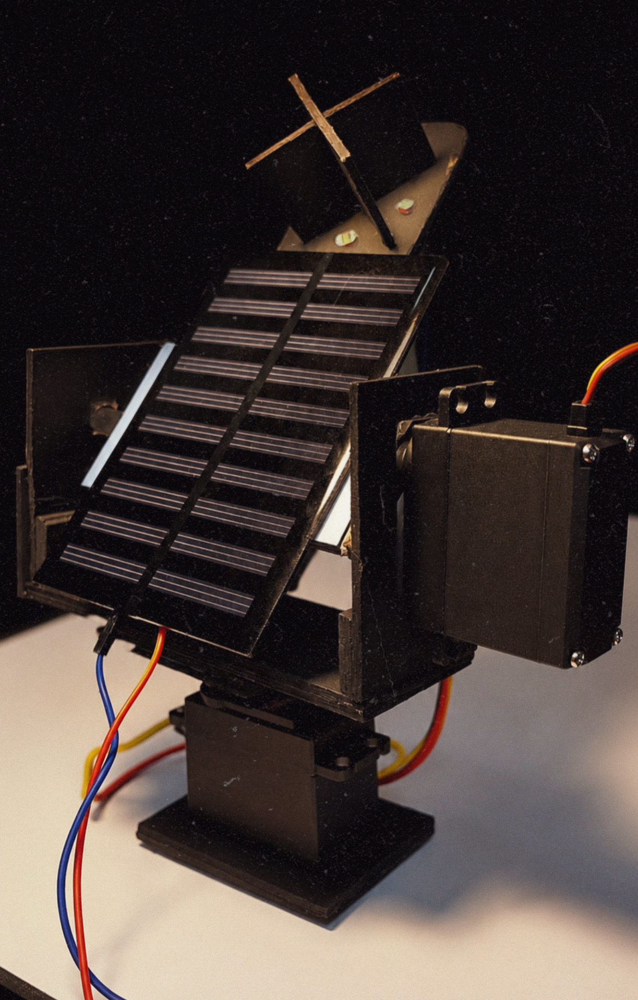

The Dual Axis Solar Tracking System acts like a sunflower that follows the sun throughout the day.
Instead of staying fixed in one position, the solar panel continuously turns and tilts to face the brightest source of sunlight. By moving on both the horizontal (azimuth) and vertical (elevation) axes, it captures more sunlight from sunrise to sunset.
Using light sensors, the system constantly compares light intensity from different directions to determine where the sun is located. It then commands servo motors to adjust the panel's position, ensuring it remains pointed toward the sun. This smart tracking mechanism helps the panel collect more solar energy and improves overall power generation efficiency compared to traditional fixed solar panels.
Four LDR sensors are placed around a small divider.
Each LDR measures sunlight intensity.
Arduino compares the readings from the sensors.
If one side receives more light than another, the corresponding servo motor rotates the panel toward the brighter side.
The process repeats continuously.
The panel remains aligned with the strongest light source, maximizing solar energy absorption.
Through the development of this Dual Axis Solar Tracking System, I gained practical experience in both hardware and software aspects of engineering. I learned how to interface LDR sensors and servo motors with an Arduino microcontroller, process analog sensor data, and implement real-time control algorithms for automatic panel positioning. The project enhanced my understanding of embedded systems, sensor calibration, circuit design, and troubleshooting techniques.
Additionally, I developed knowledge of renewable energy concepts, particularly how solar panel orientation affects energy efficiency and power generation. Working on the mechanical structure and dual-axis movement mechanism also improved my skills in system integration, automation, and engineering problem-solving.